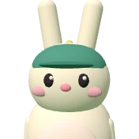
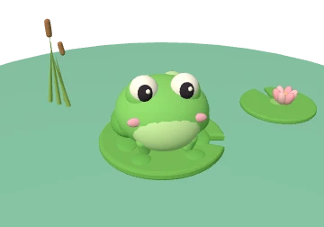
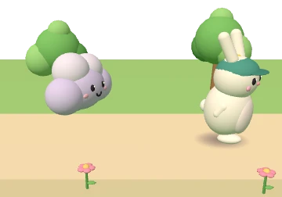
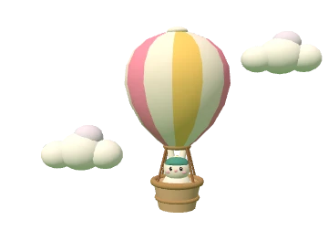

ปัญหาที่โครงสร้าง
เพดานสั้น มีรู หรือขยับไม่พอ ประตูจึงปิดไม่ได้จริง ๆ
ฝึกเท่าไรก็ไม่หาย ต้องผ่าตัด หรือใส่เพดานเทียมช่วยพูด
เครื่องนี้ตั้งค่าให้ลดการเคลื่อนไหว ภาพในหน้านี้จึงหยุดอยู่
ต้นแบบ · อัปเดต 5 พ.ย. 2569
ปากเก่งคือแผ่นกั้นใต้จมูกกับไมค์ 2 ตัว ที่วัดว่าเสียงพูดออกทางจมูกมากแค่ไหน แล้วส่งค่าให้เกมบนแท็บเล็ต เด็กปากแหว่งเพดานโหว่จึงฝึกพูดที่บ้านได้บ่อยขึ้น และเห็นเสียงของตัวเองทันที
เครื่องมือฝึกเสริมที่บ้าน ภายใต้คำแนะนำของนักแก้ไขการพูด
ต้นแบบนี้ยังไม่ได้ตรวจสอบเทียบกับ Nasometer ใช้ดูแนวโน้มจากการฝึกเท่านั้น ไม่ใช้วินิจฉัย
แผ่นกั้นแยกเสียงที่ออกจมูกกับเสียงที่ออกปาก ไมค์แต่ละตัวรับเสียงฝั่งของตัวเอง เครื่องเทียบความดังของสองฝั่งแล้วบอกเป็นเปอร์เซ็นต์เสียงจมูก
ปา เป็นเสียงปาก ประตูกั้นจมูกปิด เสียงออกทางปากเกือบทั้งหมด ค่าเสียงจมูกจึงต่ำ
เสียงจมูก (nasalance)
12%
กำลังพูด · เครื่องคำนวณค่า
จมูก12%ปาก88%
เสียงจมูก ÷ (เสียงจมูก + เสียงปาก) × 100
0.12 ÷ (0.12 + 0.88) × 100 = 12%
ตัวเลขในภาพนี้สมมติขึ้นเพื่ออธิบายหลักการ ไม่ใช่ค่าจากเครื่องจริงหรือค่าของเด็กคนใด
รายละเอียดข้อมูลที่ ESP32 ต้องส่ง อยู่ใน docs/DEVICE_PROTOCOL.md (ข้อเสนอ ยังไม่ได้ทดสอบกับบอร์ดจริง)
ในปากมีประตูกั้นจมูก (velopharyngeal valve) คือเพดานอ่อนที่ยกขึ้นไปปิดกับผนังคอหอย พูดเสียงปากอย่าง ปา ตา กา ประตูต้องปิด พูดเสียงนาสิก ม น ง ประตูเปิด
ลมและเสียงที่ออกทางปากลมและเสียงที่ออกทางจมูก
บางคนแม้ผ่าตัดซ่อมเพดานแล้ว ประตูก็ยังปิดไม่สนิท เรียกว่า VPI (velopharyngeal insufficiency) อาจเพราะเพดานสั้น มีรูเหลือ หรือขยับได้ไม่พอ
ภาพวาดอย่างง่าย สัดส่วนไม่ตรงกับอวัยวะจริง
เด็กอยู่ในการดูแลของทีมเพดานโหว่หลายวิชาชีพ ผ่าตัดเป็นช่วง ๆ ตามวัย และฝึกพูดต่อเนื่องหลังซ่อมเพดาน
ช่วงอายุเป็นค่าประมาณจากความรู้ทั่วไป แต่ละศูนย์ทำต่างกัน แถบสีเขียวคือช่วงหลังซ่อมเพดานที่ยังฝึกพูดอยู่ ซึ่งเป็นช่วงที่ปากเก่งใช้ได้
นักแก้ไขการพูดในไทยมีน้อย ทีมของ Prathanee จึงจัดค่ายฝึกพูดเข้มข้น 4 วัน แล้วนัดติดตามแบบวันเดียวอีก 5 ครั้ง และฝึก “ผู้ช่วยฝึกพูด” ในพื้นที่ให้ฝึกเด็กต่อหลังค่าย
งานวิจัยรายงานว่าได้ผล แต่ส่วนใหญ่เป็นงานขนาดเล็ก ภายหลังนำไปใช้ที่ลาวด้วย แนวคิด “ฝึกบ่อย มีคนช่วยฝึกใกล้บ้าน” นี้คือที่ที่ปากเก่งอยากเข้าไปเสริม
เพดานสั้น มีรู หรือขยับไม่พอ ประตูจึงปิดไม่ได้จริง ๆ
ฝึกเท่าไรก็ไม่หาย ต้องผ่าตัด หรือใส่เพดานเทียมช่วยพูด
ออกเสียงชดเชย หรือผิดเฉพาะบางเสียง ทั้งที่ประตูปิดได้
แก้ด้วยการฝึกพูด และเริ่มฝึกได้แม้ประตูยังปิดไม่สนิท
เด็กหลายคนมีทั้งสองแบบ จึงต้องผ่าตัดควบคู่กับฝึกพูด

เกมปากเก่งตอนนี้อยู่ที่ขั้นคำ: คำในแผนของครู ชื่อเพื่อน และคำนาสิกอย่าง “มา”
ไล่จากเสียงเดี่ยว ไปพยางค์ คำ ประโยค จนถึงพูดคุยจริง
ปา–มา ตา–นา ให้เด็กรู้ความต่างระหว่างเสียงปากกับเสียงจมูก
ให้เด็กเห็นเสียงตัวเอง เช่น จอของ Nasometer กล้องส่องดูเพดาน หรือหลอดที่มีลูกลอยบอกลมรั่ว
ให้พ่อแม่ช่วยฝึกต่อที่บ้านระหว่างนัด
เป่าลูกโป่ง ดูดหลอด หรือบริหารปากโดยไม่พูด เพื่อหวังให้เพดานแข็งแรง ใช้ไม่ได้กับเด็กกลุ่มนี้ การเป่าใช้ได้แค่ช่วยให้เด็กรู้สึกว่าลมออกทางปาก ระหว่างที่ฝึกพูด เกมบอลลูนของปากเก่งจึงใช้เสียงพูดเท่านั้น
แล้ววนกลับไปข้อ 1 ทุกครั้งที่ครูทบทวนแผน

ฟังคำ แล้วเรียกชื่อเพื่อน ปู หมา ปลา นก เต่า เพื่อนหันมาเมื่อเกมได้ยินเสียงที่สัญญาณใช้ได้ ไม่ตัดสินจากค่าเสียงจมูก
ตอบสนองต่อ: ได้ยินเสียงพูด
เด็กเลือกทางเอง เริ่มพูดแล้วกระต่ายวิ่งทันที หนีเพื่อนเมฆที่ไล่ตามแบบเล่น ๆ (ไม่มีวันจับได้) พูดจบ 1 คำ ถึงธง 1 ช่วง เกณฑ์เสียงปากบันทึกให้ผู้ดูแลดูเท่านั้น
ตอบสนองต่อ: ได้ยินเสียงพูด
พูดต่อเนื่องให้ครบเวลาในแผน หยุดหายใจได้ บอลลูนไม่ตก บอลลูนลอยขึ้นเมื่อค่าเสียงปากถึงเกณฑ์ที่ครูตั้ง (เริ่มต้น 70%) และทุกค่าที่ผ่านเกณฑ์ลอยเร็วเท่ากัน
ตอบสนองต่อ: เสียงปากถึงเกณฑ์พูดคำนาสิก เช่น “มา” ให้ถึงเป้าเสียงจมูกที่ครูตั้ง (เริ่มต้น 40%) ฝึกให้รู้ว่าบางคำต้องมีเสียงจมูก
ตอบสนองต่อ: เสียงจมูกถึงเป้ามีอยู่จริง แต่ต้องแยกให้ออกว่าอะไรพิสูจน์แล้ว อะไรยังไม่ได้พิสูจน์
| หลักที่ปากเก่งใช้ | ใช้จริงในคลินิกไหม | หลักฐาน |
|---|---|---|
| วัด nasalance ด้วยแผ่นกั้นกับไมค์ 2 ตัว | ใช้แพร่หลาย เครื่อง Nasometer | หลักฐานว่าวินิจฉัยได้แม่นยังจำกัด (INAHTA 2016) วัดคนเดิมซ้ำต่างครั้งยังต่างกันได้ 6–8 จุด (de Boer & Bressmann 2014) และเครื่องราคาถูกแบบโอเพนซอร์สแยกเสียงได้น้อยกว่าเครื่องมาตรฐาน (Wang 2026) |
| ภาพป้อนกลับ | ใช้ ASHA ระบุว่าเหมาะกับปัญหาที่เกิดเฉพาะบางเสียงหรือเกิดจากการเรียนรู้ผิด | งานส่วนใหญ่เล็ก ระดับหลักฐานยังต่ำ (Neumann & Romonath 2012) |
| เกมฝึกพูดที่บ้าน | เริ่มมีใช้ | เกมที่ให้ภาพป้อนกลับในเด็ก 5 คน เสียงขึ้นจมูกมีแนวโน้มลดลง แต่ไม่มีกลุ่มเปรียบเทียบ (Cler 2017) และการฝึกบนแท็บเล็ตได้ผลพอ ๆ กับฝึกบนโต๊ะ แต่เป็นเด็กกลุ่มอื่น ไม่ใช่เด็กเพดานโหว่ (Jesus 2019) |
| ฝึกบ่อย มีคนช่วยฝึกนอกคลินิก | ใช้ในไทย | โมเดลชุมชนของมหาวิทยาลัยขอนแก่นรายงานว่าได้ผล ส่วนใหญ่เป็นงานขนาดเล็ก |
| ไม่ตั้งกติกา “ยิ่งเสียงจมูกต่ำยิ่งดี” | ตรงกับหลักวิชาชีพ | ค่าเสียงจมูกของเด็กไทยที่พูดปกติขึ้นตามจำนวนเสียงนาสิกในบทอ่าน (Prathanee 2003) ดูกราฟด้านล่าง |
ค่าเสียงจมูกเฉลี่ยของเด็กไทยที่พูดปกติ
แยกตามชนิดบทอ่าน · Prathanee และคณะ 2003 · เด็ก 188 คน
ค่าปกติขึ้นลงตามคำที่พูด เกมของปากเก่งจึงไม่ให้รางวัลกับค่าเสียงจมูกที่ต่ำที่สุด และเกณฑ์ทุกอันให้นักแก้ไขการพูดตั้งตามคำที่ใช้ฝึก
สรุปงานวิจัยฉบับเต็มของโปรเจกต์อยู่ใน evidence-th.md
ตอนนี้เว็บต้นแบบครบ 4 เกมกับแดชบอร์ด ทำงานกับสัญญาณจำลอง ยังไม่ได้ต่อ ESP32 จริง และยังไม่ได้ทดสอบกับเด็ก
เสร็จแล้ว
4 เกม แดชบอร์ดนักแก้ไขการพูด สัญญาณจำลอง ฉาก 3D และหน้านี้ อยู่บน GitHub SOGUY144/PakKeng
ถัดไป · เราอยู่ตรงนี้
เฟิร์มแวร์ส่ง nasalPercent speechDetected nasalDb oralDb clip ตาม DEVICE_PROTOCOL.md และหน้าเว็บมีตัวเลือก “สัญญาณจำลอง / อุปกรณ์จริง”
ต่อจากนั้น
ฉาก 3D ลื่นไหม เสียงอ่านภาษาไทยของเครื่อง การแตะ และวัดความหน่วงจากเสียงพูดถึงจอ
ต่อจากนั้น
วัดซ้ำหลายรอบดูว่าค่าแกว่งเท่าไร ตั้งเกณฑ์ไมค์หลุด เสียงเบา เสียงแตกจากค่าจริง และถ้าทำได้ เทียบกับ Nasometer ของโรงพยาบาล
ต่อจากนั้น
ชุดคำ เกณฑ์ ข้อความในจอเด็ก และอัดเสียงตัวอย่างแทนเสียงสังเคราะห์ของเครื่อง
ต่อจากนั้น
ภายใต้นักแก้ไขการพูด ดูว่าใช้เองได้ไหม ฝึกได้นานแค่ไหน ถ้าทำเป็นงานวิจัยต้องผ่านคณะกรรมการจริยธรรมก่อน
WebSocketSignalSource พร้อม test ด้วย WebSocket จำลองfeat/call-friend เข้า master แล้วให้เจ้าของ repo (SOGUY144) ต่อ Vercel กับ GitHub ให้ deploy เองทุก pushเริ่มอ่านที่ HANDOFF.md แล้วดูรายการเต็มใน TODO.md